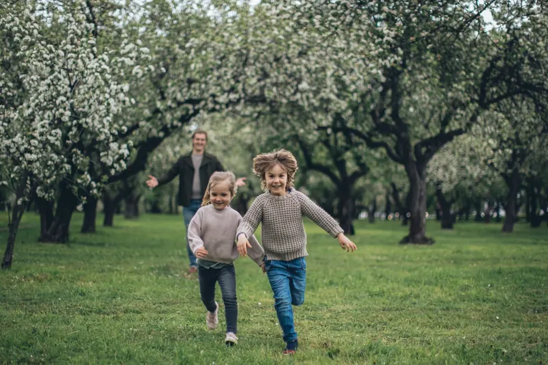

Bel ons
Maandag t/m vrijdag van 9.00 tot 13.30 uur
Contact
Heb je een vraag of iets anders? Je kunt ons altijd bellen, appen of mailen. We reageren zo snel mogelijk.
En wil je Henny aaien? Dan moet je toch echt even langskomen.

Maandag t/m vrijdag van 9.00 tot 13.30 uur
We reageren zo snel mogelijk
Voorlandpad 17, Amsterdam
Stuur ons een bericht
Velden met een * zijn verplicht.
Bel ons op 06 12 34 56 78 of mail naar info@sporty.nl. Is je kind ziek? Laat het ons dan zo snel mogelijk weten.
Veelgestelde vragen
Nee, zeker niet. Je hoeft echt geen Ronaldo te zijn. Iedereen is welkom, ongeacht niveau of welke sport je leuk vindt.
Van alles! En maak je geen zorgen: we doen veel meer dan alleen voetbal. Denk aan tikspelletjes, balspellen en allerlei andere sporten en spellen. Kinderen mogen ook zelf ideeën aandragen, en daar luisteren we altijd naar.
We werken met één vaste groep van maximaal 20 kinderen. We houden ons altijd aan de wettelijke beroepskracht-kindratio: ongeveer één coach per tien kinderen, en er zijn altijd minimaal twee volwassenen aanwezig.
Op schooldagen zijn we open vanaf het einde van de schooldag; je haalt je kind uiterlijk om 18.30 uur op. Op studiedagen zijn we open van 08.00 tot 18.30 uur. Telefonisch zijn we bereikbaar van 9.00 tot 13.30 uur.
Tijdens schoolvakanties en op studiedagen zijn we open van 08.00 tot 18.30 uur. Dan hebben we een speciaal Sporty-programma vol leuke activiteiten. Lees meer over vakantie- en studiedagen.
De kinderen krijgen belegde broodjes als lunch. Er is altijd fruit, en we drinken water.
Ja, zeker. Bespreek het bij de intake, dan houden we er rekening mee.
Ja, dat kan. Geef het aan bij de aanmelding, dan kijken we samen naar de mogelijkheden.
Dan gaan we naar binnen en doen we daar spelletjes. Of we bedenken een creatieve oplossing en toveren de locatie bijvoorbeeld om tot bioscoop.
Niks bijzonders, alleen een flinke dosis energie. Die raken we samen wel kwijt. Speciale sportschoenen of sportkleding zijn niet nodig. Maar het mag natuurlijk wel.
Ja, zeker! Boek een gratis proefdag.
Aanmelden kan via het aanmeldformulier. Dat is helemaal vrijblijvend: daarna nemen we contact met je op.
Ja, dat kan. Komt een dag even niet uit? Dan ruil je hem voor een andere dag in dezelfde schoolweek.
Stuur ons een mail via info@sporty.nl.
De opzegtermijn is 1 maand, gerekend vanaf de datum van je mail.
Ons uurtarief is € 10,31, zonder extra kosten. Alle informatie en een rekentool vind je bij Abonnement en kosten.
Je kunt kinderopvangtoeslag aanvragen via www.toeslagen.nl. Doe dat binnen drie maanden nadat de opvang is gestart, anders loop je toeslag mis. Wil je weten hoeveel kinderopvangtoeslag je krijgt? Maak dan een proefberekening op www.toeslagen.nl, of gebruik onze rekentool.
Kom je er niet uit? We helpen je graag. Je kunt ons van maandag tot en met vrijdag van 9.00 tot 13.30 uur bereiken via 06 12 34 56 78.
Niet tevreden? Dat horen we graag. Bespreek het met de mentor van je kind of met Tim en Sureyo, of dien een formele klacht in. Lees onze klachtenregeling.
Kom langs
We vinden het leuk om je te ontmoeten! Je bent welkom om rond te kijken, kennis te maken en mee te spelen.
Sporty